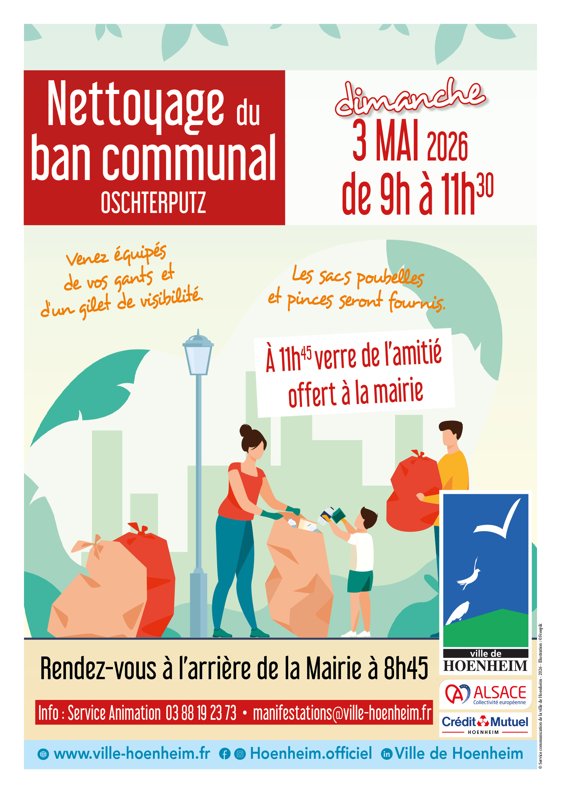

- Cet événement est terminé
Oschterputz 2026 : Grand Nettoyage de Hoenheim
3 mai à 9 h 00 min - 11 h 30 min
Navigation de l'événement

Vous êtes conviés à l’opération Oschterputz ! Cette action de citoyenneté et d’écologie organisée par la ville, à l’occasion du nettoyage du ban communal, aura lieu le dimanche 3 mai 2026 de 9h à 11h30.
Rendez-vous dimanche 3 mai 2026 à 8h45, à l’arrière de la Mairie – 28 rue de la République. Vous parcourrez par groupe les rues de la ville en toute convivialité.
Les sacs poubelles vous seront remis par la ville ainsi que des pinces de ramassage, avec la collaboration du Crédit Mutuel de Hoenheim et la Collectivité européenne d’Alsace dans le cadre de l’Elsàss Oschterputz.
Engageons -nous ensemble pour une ville plus propre !
Venez nombreux !
Plus d’information : Service Animation au 03 88 19 23 73 ou à manifestations@ville-hoenheim.fr.